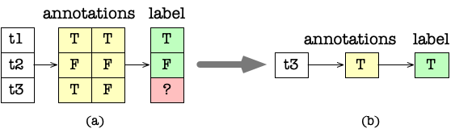

Example: Customization (TOADD)¶
We will show how to write customized functions for task assignment and annotation aggregation. The chief purpose is to show the developers how to easily customize Cymphony for some ad-hoc requirements.
Consider a very simple case in the figure below. Consider three tasks t1, t2, t3 that each needs three workers to annonate to be true (T) or false (F). The annotations from three workers will be aggregated using majority voting; that is, if two workers agree, then we take their results as the final label.
Apparently, a simple optimization that the requester can specify is: (1) for each task, ask two workers first, if they have the same result (e.g., the annotations for t1, t2 in (a)), then we just take the same result as the final label; and (2) if they disagree (e.g., the annotations for t3 in (a)), we just ask this tuple (e.g., t3) for a third label as the result (b).
{kind=link}
First, existing crowdsourcing systems do not allow a requester to specify such task assignment. Second, the requirement of a requester can be much more complicated, and it may be hard to specify using a declarative language. Hence, we propose to use an abstract API to satisfy such requirements.